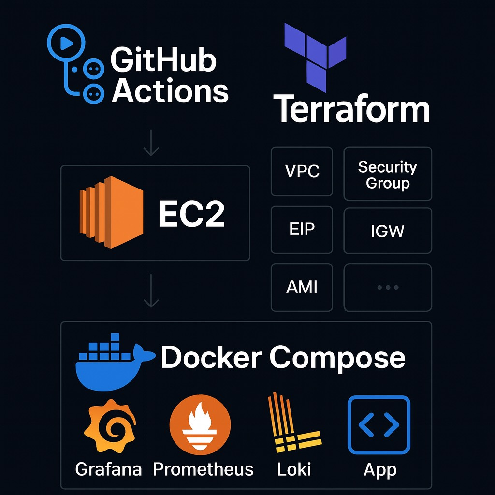

A fully monitored and automated cloud project deployed on AWS EC2, managed with Terraform, and continuously delivered through GitHub Actions. The platform integrates Prometheus, Grafana, and Loki to achieve full observability.
Visualizes dashboards, metrics, and logs in real time from Prometheus and Loki.
Scrapes and stores metrics from Node Exporter and the app using HTTP endpoints.
Collects container logs, enabling fast debugging by correlating logs and metrics.
The diagram below shows the flow from GitHub to EC2, which hosts Docker containers for Prometheus, Grafana, Loki, Node Exporter, and the monitored app.

This project uses a fully automated deployment pipeline built with GitHub Actions.
On every push to the main branch:
View the full workflow on GitHub:
GitHub Actions Workflow (deploy.yml)
Below are live dashboards showing real-time metrics and targets: